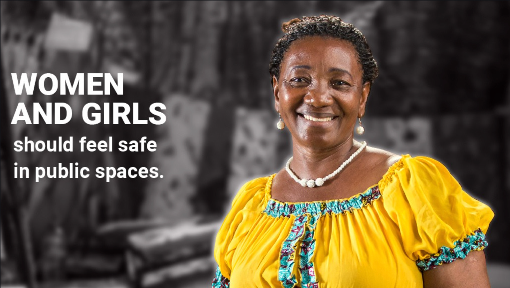

Communication Campaign & Social Media
16 Days of Activism
#KwaSautiYako
Studio 19 partnered with UN Women Tanzania on the 2022 campaign themed "UNITE! Activism to End Violence against Women and Girls." Through influencer activations, bilingual multimedia content, and live social engagement, we built a 16-day campaign that turned awareness into action.